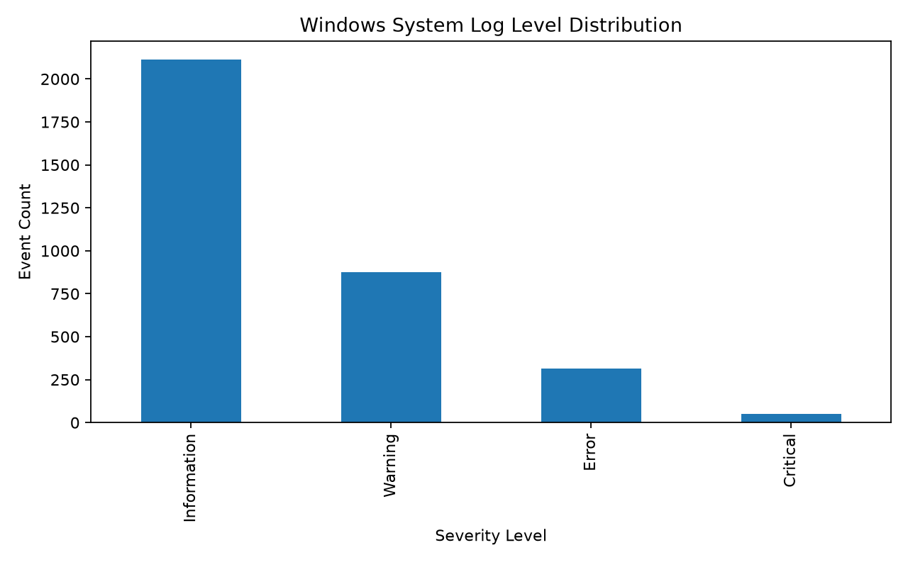
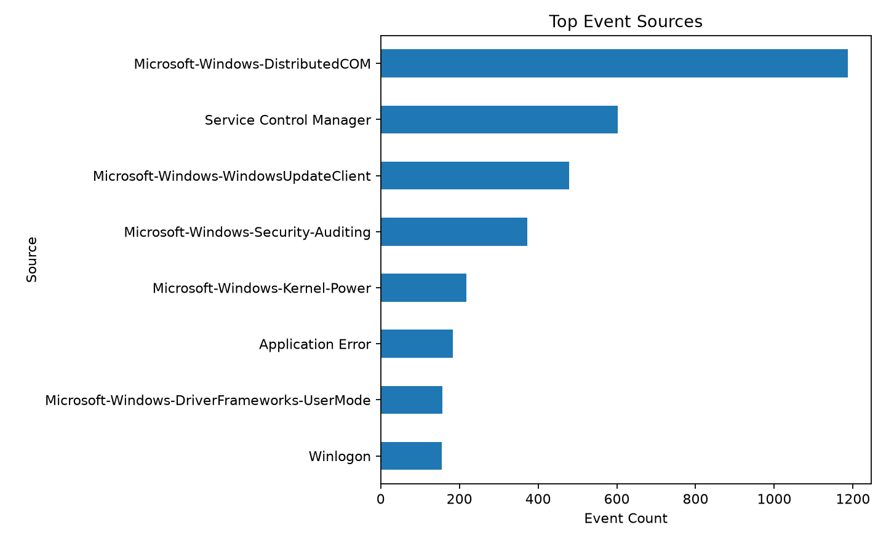
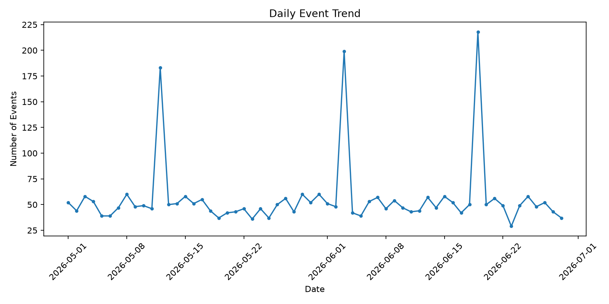

Student: Mohammed Thayyab Yakub
Data note: The included dataset is synthetic and should be replaced with a real Windows Event Viewer CSV when required.
| Metric | Value |
|---|---|
| Total Events | 3353 |
| Unique Sources | 8 |
| Start Date | 2026-05-01 |
| End Date | 2026-06-29 |
| Information | 2114 |
| Warnings | 876 |
| Errors | 314 |
| Critical | 49 |
| Failed Logons (4625) | 38 |



| Count | |
|---|---|
| Source | |
| Microsoft-Windows-DistributedCOM | 1187 |
| Service Control Manager | 602 |
| Microsoft-Windows-WindowsUpdateClient | 478 |
| Microsoft-Windows-Security-Auditing | 372 |
| Microsoft-Windows-Kernel-Power | 218 |
| Application Error | 184 |
| Microsoft-Windows-DriverFrameworks-UserMode | 157 |
| Winlogon | 155 |